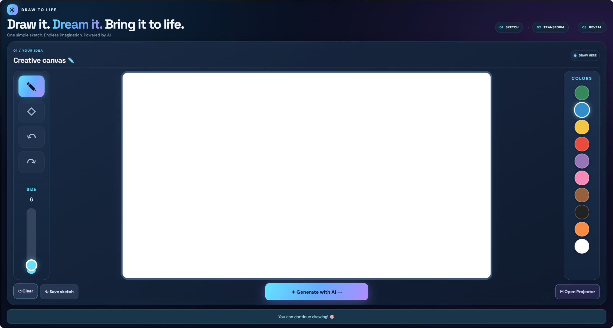
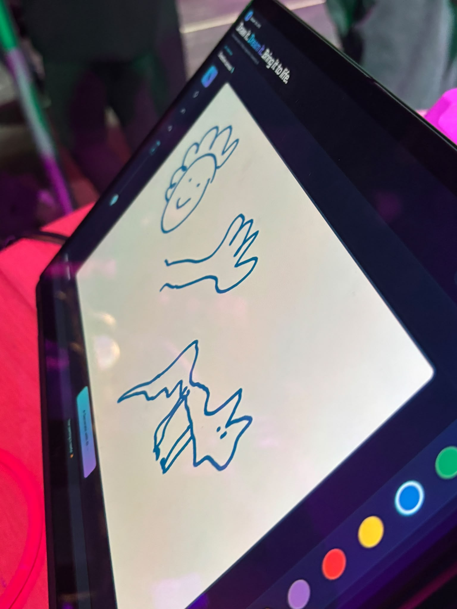
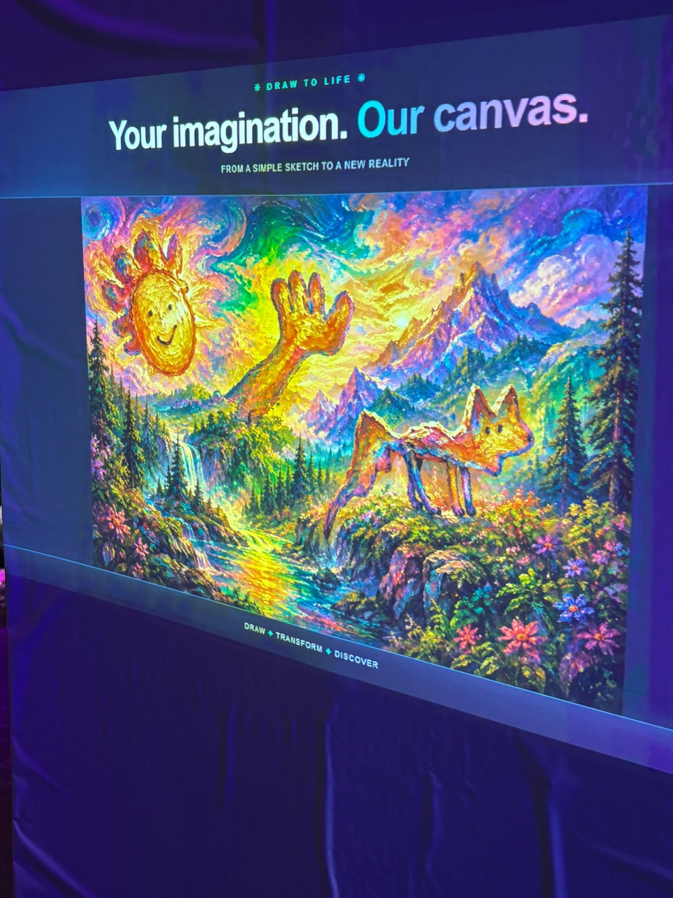
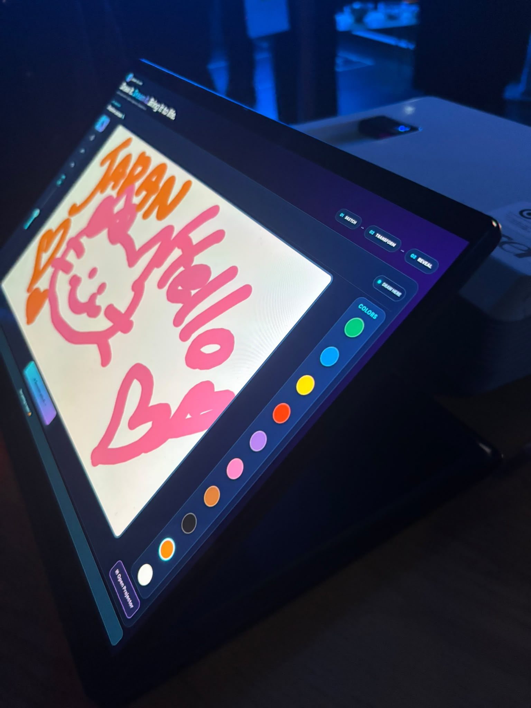
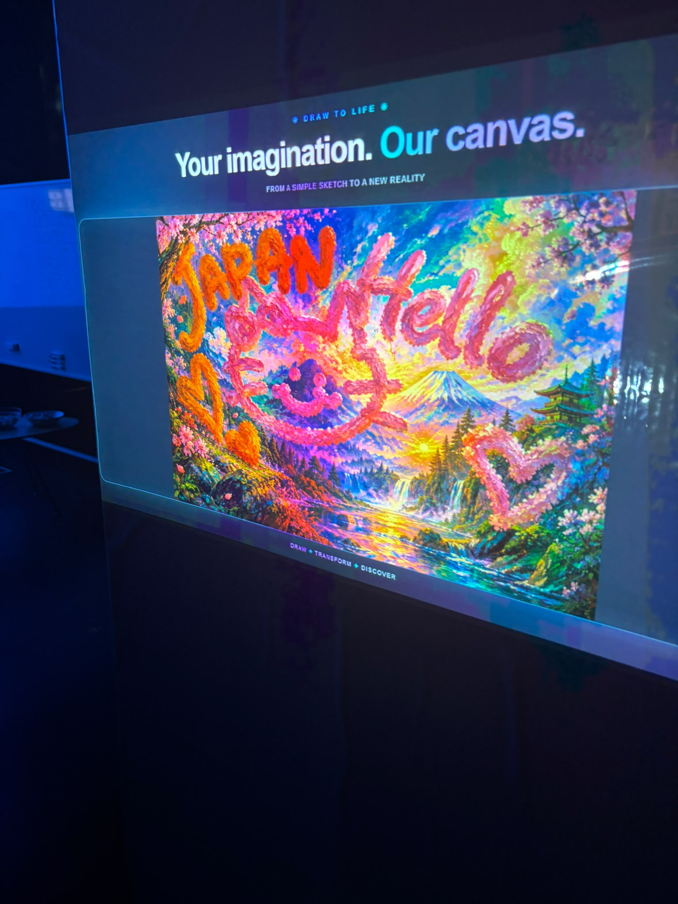
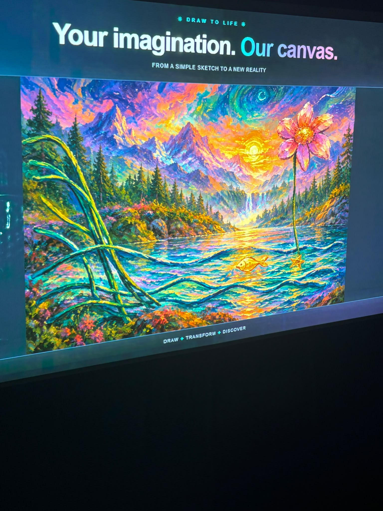

Hi, I'm Bayan.
I like making ideas interactive.
I'm studying IT, Media and Design at Södertörn University. This page documents our final project, Draw to Life.
Explore my project ↗Draw to Life
Created by Bayan Alasadi & Hanan Mughrabi
Draw to Life is an interactive art installation that combines creative programming and generative AI. Participants draw on a digital canvas using colors, different brush sizes, and simple drawing tools. When they press Generate with AI, the sketch is sent through our Node.js server to the OpenAI API. OpenAI transforms it into a colorful, abstract artwork inspired by psychedelic rave aesthetics. The finished image appears on a separate projector screen, while the participant can keep drawing on the laptop. We wanted to explore how human imagination and AI can work together and make digital art feel playful, accessible, and surprising.
The interactive drawing app is a separate project. This page documents the process and final result.

From sketch to AI art.
Five photographs and a 58-second video document how Draw to Life works, from drawing on the laptop to seeing the result on the projector.





Project demonstration
30–60 second video · Draw → Generate → Project
Make a little blue magic.
This is a small interactive experiment made with PixiJS. Move your mouse or click to create different shapes and patterns.
Loading interactive artwork...
A little about me
My name is Bayan Alasadi, and I study IT, Media and Design at Södertörn University. I enjoy learning how design and programming can work together to create interactive experiences.